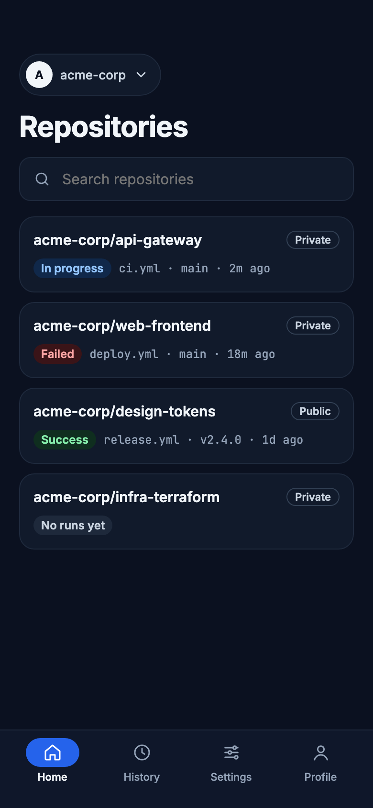

Every parameter type
Choices, booleans, multi-line text, files and runs — each gets the right input.
release/2.4 · stagingChoices, booleans, multi-line text, files and runs — each gets the right input.
release/2.4 · stagingPassword parameters are masked, never pre-filled and never saved.
DB_PASSWORD ••••••••Streams as it runs, with colours, search and per-stage logs.
● streaming · 1m 48sFailing stage, failing tests and the commits that went in.
✕ Test · 1 of 215Watch a build and get told when it finishes.
✓ #482 succeededPinned jobs and their status without opening the app.
▲ nightly-e2e unstableWork and personal Jenkins; switch in a tap.
2 servers · 1 activeWhat’s waiting, which agents are busy, take one offline.
3 queued · 5/6 busyFace ID or fingerprint, with your passcode as backup.
Face ID onAdd your GitHub accounts and browse repositories and workflows next to your Jenkins servers. Runs, logs and history are on the way.
See every integration →